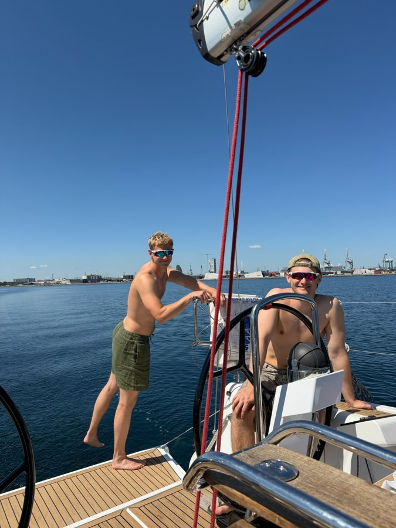

Om mig
Lidt om hvem jeg er, ud over CV'et.
Jeg er 24 år og går på 5. semester på HA Almen på BSS. Det jeg nok er mest kendetegnet ved er, at jeg bliver ved med at synes, det er sjovt at lære noget nyt. Det gælder komplekse modeller og figurer i undervisningen, men lige så meget helt almindelige ting, som at finde ud af hvordan man rent faktisk får styr på en aircondition fjernbetjening. Jeg sætter mig hurtigt ind i nye ting, og bliver sjældent træt af at blive klogere.
Jeg bor sammen med min kæreste i Aarhus C. Det meste af min fritid går med familie og venner, og med at sejle vores sejlbåd ud fra Marselisborg, så snart vejret tillader det.

Jeg cykler racercykel og træner fitness, når jeg kan finde tiden, og om vinteren står jeg lige så gerne på ski. Ellers følger jeg med i stort set al den sport, jeg kan komme i nærheden af. Fodbold fylder mest. Jeg ser rigtig meget af det, og Arsenal er favorithold uden sammenligning.
Fire år i en lufthavnsvirksomhed med højt tempo og skiftende vagtplaner har lært mig at holde overblikket, også når planen ændrer sig i sidste øjeblik. Jeg tager gerne ansvar før jeg bliver bedt om det, og jeg kan lide kundekontakt, både med folk jeg kender og folk jeg lige har mødt.